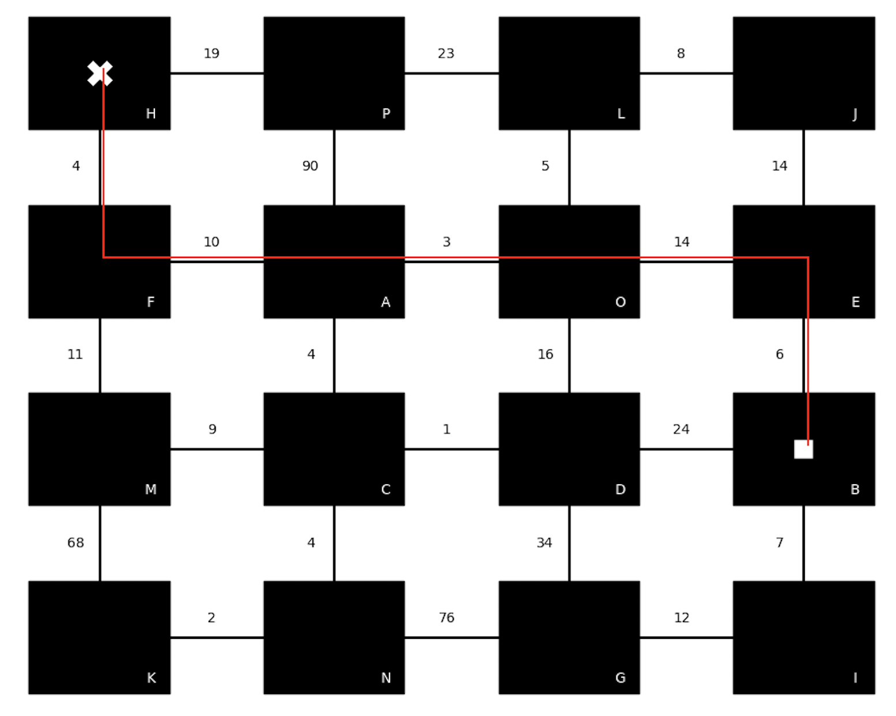

OBJECTIF
Bienvenue sur le site de mon projet de robotique!
Mon projet consiste en un robot capable de se déplacer d'un point A à un point B. Le robot doit être capable de réaliser son trajet avec le plus court chemin. De plus, le robot doit également être capable de changer d'itinéraire si un obstacle se présente ou le contourner si aucune autre issue est possible.
MISE EN OEUVRE
Ce projet a été réalisé comme sujet de TIPE (travaux d'initiative personnelle encadrés) de CPGE (classe préparatoire aux grandes écoles) portant sur le thème de la ville pour l'année 2022-2023. Au fil des années, les villes sont devenues plus intelligentes et autonomes avec les avancés technologiques. C'est pourquoi, j'ai donc décidé de concevoir une voiture autonome, un projet entrant complètement dans cette dynamique.
Afin de pouvoir modéliser ce concept, il faut impérativement que la ville soit un plan hippodamien. Un plan hippodamien est, en urbanisme, un type d'organisation de la ville dans lequel les rues sont rectilignes et se croisent en angle droit, créant des îlots de forme carrée ou rectangulaire. De très nombreuses villes avec un tel plan existent dans le monde entier. Exemple : New York, Barcelone, Pékin, Manhattan,...
Ainsi, ce véhicule autonome pourrait remplacer les bus, taxis ou encore faire guise de véhicule personnel.
PRINCIPE
Le robot fonctionne de la manière suivante:
- L'utilisateur doit entrer le sommet de départ
- --------------------------------------------------arrivé
Le programme du robot renverra alors un graph du circuit avec les positions de départ (carré blanc), d'arrivée (croix blanche) ainsi que l'itinéraire en rouge:
Ici on a choisi le sommmet de départ "B" et le sommet d'arrivé "H".
Le programme du robot à ainsi trouvé le chemin entre ces deux sommets dont la longueur est la plus faible des chemins possible. La longueur d'un chemin est égale à la somme des poids de chacune des arêtes qui le constituent. Pour notre exemple, le plus court chemin : B-E-O-A-F-H à une longueur de 37. Dans la vie pratique, le poids sur les arêtes pourrait être le temps de trajet entre deux sommets.
CONCEPTION
Le véhicule est constitué de:
- Chassis (2x roues motrice - motoreducteurs CC/roue folle/interrupteur/coupleur de piles)
- Capteur de distance à ultrasons HC-SR04
- 2 capteurs infrarouges
- Servomoteur
- Buzzer
- Microcontroleur Arduino uno
- Pont-H L293D
- Breadboard
- Cable jumper
Voici un schéma des branchements effectués :
CODAGE
Ce projet a été réalisé dans le language Python car c'est ce langage qui est au programme de CPGE. Pour ce faire, il a fallu transverser un code arduino dans l'Arduino uno. Ce code sert à "traduire" en quelque sorte le langage Python en langage Arduino. De plus, il faut télécharger le module pymata4 écrit par Alan Yorinks afin de coontroler la carte arduino à l'aide de nombreuse fonctions. Malheureusement, un cable entre la carte et l'ordinateur est nécessaire...
#Importation des modules
import random
import numpy as np
from matplotlib.patches import Rectangle
import matplotlib.pyplot as plt
from pymata4 import pymata4
import time #importer la librairie temps
import sys
board =pymata4.Pymata4() #detection de la carte Arduino
G={'A':{'F':10,'C':4,'P':90,'O':3},
'B':{'E':6,'D':24,'I':7},
'C':{'N':4,'D':1,'A':4,'M':9},
'D':{'C':1,'O':16,'G':34,'B':24},
'E':{'J':14,'O':14,'B':6},
'F':{'M':11,'H':4,'A':10},
'G':{'N':76,'D':34,'I':12},
'H':{'P':19,'F':4},
'I':{'G':12,'B':7},
'J':{'L':8,'E':14},
'K':{'N':2,'M':68},
'L':{'O':5,'J':8,'P':23},
'M':{'F':11,'K':68,'C':9},
'N':{'K':2,'G':76,'C':4},
'O':{'A':3,'D':16,'E':14,'L':5},
'P':{'H':19,'A':90,'L':23}}
#Variables-Capteur de distance#
trig=9 #pin capteur ultrason (digital)
echo=8 #pin capteur ultrason (digital)
distance=[]
#Variables-Capteurs infrarouges#
RIGHT=1 #pin capteur infrarouge droit (analog)
LEFT=0 #pin capteur infrarouge gauche (analog)
#Variables-Moteurs#
GA=10 #pin moteur gauche poleA (digital)
GB=5 #pin moteur gauche poleB (digital)
DA=11 #pin moteur droit poleA (digital)
DB=6 #pin moteur droit poleB (digital)
HIGH=255 #Vitesse Max
LOW=0 #Vitesse nulle
#Variables-Servomoteur#
Servo_pin = 4 #pin Servomoteur
anglec=90 #angle nulle
angled=0 #angle droite
angleg=180 #angle gauche
#Variables-Dijkstra#
chemin=[]
#Orientation-véhicule
LVoisin=[]
Direction=[]
Lmatgraph=[]
Lpoids=[]
mvm=[]
issueb=[]
########################################-Fonction qui affiche le graph-############################################
def depart():
entre=input("Quelle est votre sommet de départ ? ")
while (entre not in G):
entre=input("\nQuelle est votre sommet de départ ? ")
return entre
def arrivée():
arrivé=input("\nQuelle est votre sommet d'arrivé ? ")
while (arrivé not in G):
arrivé=input("\nQuelle est votre sommet d'arrivé ? ")
return arrivé
def matrice(G):
matgraph=[0,0,0,0,0,0,0,0,0,0,0,0,0,0,0,0]
nbrvois=[]
poids=[]
couleur=["A","B","C","D","E","F","G","H","I","J","K","L","M","N","O","P"]
for cle,valeur in G.items():
nbrvois.append(len(valeur))
sommet0=couleur[nbrvois.index(2)]
matgraph[0]=sommet0
for cle,valeur in G.items():
if cle==sommet0:
for k,j in valeur.items():
sommet1=k
matgraph[1]=sommet1
break
for cle,valeur in G.items():
if cle==sommet1:
for k,j in valeur.items():
if len(G[k])==3:
sommet2=k
break
matgraph[2]=sommet2
for cle,valeur in G.items():
if cle==sommet2:
for k,j in valeur.items():
if len(G[k])==2:
sommet3=k
break
matgraph[3]=sommet3
for cle,valeur in G.items():
if cle==sommet0:
for k,j in valeur.items():
if (k!=sommet1):
sommet4=k
break
matgraph[4]=sommet4
for cle,valeur in G.items():
if cle==sommet4:
for k,j in valeur.items():
if len(G[k])==4:
sommet5=k
break
matgraph[5]=sommet5
for cle,valeur in G.items():
if cle==sommet5:
for k,j in valeur.items():
if len(G[k])==4:
if (sommet2 in G[k]):
sommet6=k
break
matgraph[6]=sommet6
for cle,valeur in G.items():
if cle==sommet6:
for k,j in valeur.items():
if len(G[k])==3:
if (sommet1 not in G[k]):
sommet7=k
break
matgraph[7]=sommet7
for cle,valeur in G.items():
if cle==sommet4:
for k,j in valeur.items():
if (k!=sommet0) and (k!=sommet5):
sommet8=k
break
matgraph[8]=sommet8
for cle,valeur in G.items():
if cle==sommet8:
for k,j in valeur.items():
if len(G[k])==4:
sommet9=k
break
matgraph[9]=sommet9
for cle,valeur in G.items():
if cle==sommet9:
for k,j in valeur.items():
if len(G[k])==4:
if (k!=sommet5):
sommet10=k
break
matgraph[10]=sommet10
for cle,valeur in G.items():
if cle==sommet10:
for k,j in valeur.items():
if len(G[k])==3:
if (sommet7 in G[k]):
sommet11=k
break
matgraph[11]=sommet11
for cle,valeur in G.items():
if cle==sommet8:
for k,j in valeur.items():
if len(G[k])==2:
sommet12=k
break
matgraph[12]=sommet12
for cle,valeur in G.items():
if cle==sommet12:
for k,j in valeur.items():
if (sommet4 not in G[k]):
sommet13=k
break
matgraph[13]=sommet13
for cle,valeur in G.items():
if cle==sommet13:
for k,j in valeur.items():
if len(G[k])==3:
sommet14=k
break
matgraph[14]=sommet14
for cle,valeur in G.items():
if cle==sommet14:
for k,j in valeur.items():
if len(G[k])==2:
sommet15=k
break
matgraph[15]=sommet15
for cle,valeur in G.items():
if cle==sommet0:
for k,j in valeur.items():
if k==sommet1:
poids0=j
elif k==sommet4:
poids3=j
elif cle==sommet1:
for k,j in valeur.items():
if k==sommet0:
poids0=j
elif k==sommet5:
poids4=j
elif k==sommet2:
poids1=j
elif cle==sommet2:
for k,j in valeur.items():
if k==sommet1:
poids1=j
elif k==sommet6:
poids5=j
elif k==sommet3:
poids2=j
elif cle==sommet3:
for k,j in valeur.items():
if k==sommet2:
poids2=j
elif k==sommet7:
poids6=j
elif cle==sommet4:
for k,j in valeur.items():
if k==sommet0:
poids3=j
elif k==sommet5:
poids7=j
elif k==sommet8:
poids10=j
elif cle==sommet5:
for k,j in valeur.items():
if k==sommet1:
poids4=j
elif k==sommet4:
poids7=j
elif k==sommet6:
poids8=j
elif k==sommet9:
poids11=j
elif cle==sommet6:
for k,j in valeur.items():
if k==sommet2:
poids5=j
elif k==sommet5:
poids8=j
elif k==sommet7:
poids9=j
elif k==sommet10:
poids12=j
elif cle==sommet7:
for k,j in valeur.items():
if k==sommet3:
poids6=j
elif k==sommet6:
poids9=j
elif k==sommet11:
poids13=j
elif cle==sommet8:
for k,j in valeur.items():
if k==sommet4:
poids10=j
elif k==sommet9:
poids14=j
elif k==sommet12:
poids17=j
elif cle==sommet9:
for k,j in valeur.items():
if k==sommet8:
poids14=j
elif k==sommet5:
poids11=j
elif k==sommet13:
poids18=j
elif k==sommet10:
poids15=j
elif cle==sommet10:
for k,j in valeur.items():
if k==sommet9:
poids15=j
elif k==sommet6:
poids12=j
elif k==sommet14:
poids19=j
elif k==sommet11:
poids16=j
elif cle==sommet11:
for k,j in valeur.items():
if k==sommet10:
poids16=j
elif k==sommet7:
poids13=j
elif k==sommet15:
poids20=j
elif cle==sommet12:
for k,j in valeur.items():
if k==sommet8:
poids17=j
elif k==sommet13:
poids21=j
elif cle==sommet13:
for k,j in valeur.items():
if k==sommet12:
poids21=j
elif k==sommet9:
poids18=j
elif k==sommet14:
poids22=j
elif cle==sommet14:
for k,j in valeur.items():
if k==sommet13:
poids22=j
elif k==sommet10:
poids19=j
elif k==sommet15:
poids23=j
elif cle==sommet15:
for k,j in valeur.items():
if k==sommet14:
poids23=j
elif k==sommet11:
poids20=j
poids=[poids0,poids1,poids2,poids3,poids4,poids5,poids6,poids7,poids8,poids9,poids10,poids11,poids12,poids13,poids14,poids15,poids16,poids17,poids18,poids19,poids20,poids21,poids22,poids23]
Lmatgraph.append(matgraph)
Lpoids.append(poids)
return ""
def graph(G,départ,arrivé):
inddep=Lmatgraph[0].index(départ)
indarr=Lmatgraph[0].index(arrivé)
L=[]
Ltrait=[0,0,0,0,0,0,0,0,0,0,0,0,0,0,0,0]
for k in Lpoids[0]:
L.append(str(k))
fig = plt.figure()
ax = fig.add_subplot()
w=3
h=3
rect1 = Rectangle((0,0), w, h, color="black")
rect2 = Rectangle((0,5), w, h, color="black")
rect3 = Rectangle((0,10), w, h, color="black")
rect4 = Rectangle((0,15), w, h, color="black")
rect5 = Rectangle((5,0), w, h, color="black")
rect6 = Rectangle((5,5), w, h, color="black")
rect7 = Rectangle((5,10), w, h, color="black")
rect8 = Rectangle((5,15), w, h, color="black")
rect9 = Rectangle((10,0), w, h, color="black")
rect10 = Rectangle((10,5), w, h, color="black")
rect11 = Rectangle((10,10), w, h, color="black")
rect12 = Rectangle((10,15), w, h, color="black")
rect13 = Rectangle((15,0), w, h, color="black")
rect14 = Rectangle((15,5), w, h, color="black")
rect15 = Rectangle((15,10), w, h, color="black")
rect16 = Rectangle((15,15), w, h, color="black")
ax.add_patch(rect1)
ax.add_patch(rect2)
ax.add_patch(rect3)
ax.add_patch(rect4)
ax.add_patch(rect5)
ax.add_patch(rect6)
ax.add_patch(rect7)
ax.add_patch(rect8)
ax.add_patch(rect9)
ax.add_patch(rect10)
ax.add_patch(rect11)
ax.add_patch(rect12)
ax.add_patch(rect13)
ax.add_patch(rect14)
ax.add_patch(rect15)
ax.add_patch(rect16)
if inddep==0:
plt.scatter(1.5, 16.5,c='white',marker='s',s=200,label='Point de départ',edgecolors='black')
elif inddep==1:
plt.scatter(6.5, 16.5,c='white',marker='s',s=200,label='Point de départ',edgecolors='black')
elif inddep==2:
plt.scatter(11.5, 16.5,c='white',marker='s',s=200,label='Point de départ',edgecolors='black')
elif inddep==3:
plt.scatter(16.5, 16.5,c='white',marker='s',s=200,label='Point de départ',edgecolors='black')
elif inddep==4:
plt.scatter(1.5, 11.5,c='white',marker='s',s=200,label='Point de départ',edgecolors='black')
elif inddep==5:
plt.scatter(6.5, 11.5,c='white',marker='s',s=200,label='Point de départ',edgecolors='black')
elif inddep==6:
plt.scatter(11.5, 11.5,c='white',marker='s',s=200,label='Point de départ',edgecolors='black')
elif inddep==7:
plt.scatter(16.5, 11.5,c='white',marker='s',s=200,label='Point de départ',edgecolors='black')
elif inddep==8:
plt.scatter(1.5, 6.5,c='white',marker='s',s=200,label='Point de départ',edgecolors='black')
elif inddep==9:
plt.scatter(6.5, 6.5,c='white',marker='s',s=200,label='Point de départ',edgecolors='black')
elif inddep==10:
plt.scatter(11.5, 6.5,c='white',marker='s',s=200,label='Point de départ',edgecolors='black')
elif inddep==11:
plt.scatter(16.5, 6.5,c='white',marker='s',s=200,label='Point de départ',edgecolors='black')
elif inddep==12:
plt.scatter(1.5, 1.5,c='white',marker='s',s=200,label='Point de départ',edgecolors='black')
elif inddep==13:
plt.scatter(6.5, 1.5,c='white',marker='s',s=200,label='Point de départ',edgecolors='black')
elif inddep==14:
plt.scatter(11.5, 1.5,c='white',marker='s',s=200,label='Point de départ',edgecolors='black')
elif inddep==15:
plt.scatter(16.5, 1.5,c='white',marker='s',s=200,label='Point de départ',edgecolors='black')
if indarr==0:
plt.scatter(1.5, 16.5,c='white',marker='X',s=400,label="Point d'arrivée",edgecolors='black')
elif indarr==1:
plt.scatter(6.5, 16.5,c='white',marker='X',s=400,label="Point d'arrivée",edgecolors='black')
elif indarr==2:
plt.scatter(11.5, 16.5,c='white',marker='X',s=400,label="Point d'arrivée",edgecolors='black')
elif indarr==3:
plt.scatter(16.5, 16.5,c='white',marker='X',s=400,label="Point d'arrivée",edgecolors='black')
elif indarr==4:
plt.scatter(1.5, 11.5,c='white',marker='X',s=400,label="Point d'arrivée",edgecolors='black')
elif indarr==5:
plt.scatter(6.5, 11.5,c='white',marker='X',s=400,label="Point d'arrivée",edgecolors='black')
elif indarr==6:
plt.scatter(11.5, 11.5,c='white',marker='X',s=400,label="Point d'arrivée",edgecolors='black')
elif indarr==7:
plt.scatter(16.5, 11.5,c='white',marker='X',s=400,label="Point d'arrivée",edgecolors='black')
elif indarr==8:
plt.scatter(1.5, 6.5,c='white',marker='X',s=400,label="Point d'arrivée",edgecolors='black')
elif indarr==9:
plt.scatter(6.5, 6.5,c='white',marker='X',s=400,label="Point d'arrivée",edgecolors='black')
elif indarr==10:
plt.scatter(11.5, 6.5,c='white',marker='X',s=400,label="Point d'arrivée",edgecolors='black')
elif indarr==11:
plt.scatter(16.5, 6.5,c='white',marker='X',s=400,label="Point d'arrivée",edgecolors='black')
elif indarr==12:
plt.scatter(1.5, 1.5,c='white',marker='X',s=400,label="Point d'arrivée",edgecolors='black')
elif indarr==13:
plt.scatter(6.5, 1.5,c='white',marker='X',s=400,label="Point d'arrivée",edgecolors='black')
elif indarr==14:
plt.scatter(11.5, 1.5,c='white',marker='X',s=400,label="Point d'arrivée",edgecolors='black')
elif indarr==15:
plt.scatter(16.5, 1.5,c='white',marker='X',s=400,label="Point d'arrivée",edgecolors='black')
ta = np.array([[[ 3, 1.5],[5, 1.5]],
[[ 8, 1.5],[10, 1.5]],
[[ 13, 1.5],[15, 1.5]],
[[ 3, 6.5],[5, 6.5]],
[[ 8, 6.5],[10, 6.5]],
[[ 13, 6.5],[15, 6.5]],
[[ 3, 11.5],[5, 11.5]],
[[ 8, 11.5],[10, 11.5]],
[[ 13, 11.5],[15, 11.5]],
[[ 3, 16.5],[5, 16.5]],
[[ 8, 16.5],[10, 16.5]],
[[ 13, 16.5],[15, 16.5]],
[[ 1.5, 3],[1.5, 5]],
[[ 1.5, 8],[1.5, 10]],
[[ 1.5, 13],[1.5, 15]],
[[ 6.5, 3],[6.5, 5]],
[[ 6.5, 8],[6.5, 10]],
[[ 6.5, 13],[6.5, 15]],
[[ 11.5, 3],[11.5, 5]],
[[ 11.5, 8],[11.5, 10]],
[[ 11.5, 13],[11.5, 15]],
[[ 16.5, 3],[16.5, 5]],
[[ 16.5, 8],[16.5, 10]],
[[ 16.5, 13],[16.5, 15]]])
x, y = ta.T
plt.text(3.9, 17, L[0], horizontalalignment = 'center', verticalalignment = 'center')
plt.text(8.9, 17, L[1], horizontalalignment = 'center', verticalalignment = 'center')
plt.text(13.9, 17, L[2], horizontalalignment = 'center', verticalalignment = 'center')
plt.text(3.9, 12, L[7], horizontalalignment = 'center', verticalalignment = 'center')
plt.text(8.9, 12, L[8], horizontalalignment = 'center', verticalalignment = 'center')
plt.text(13.9, 12, L[9], horizontalalignment = 'center', verticalalignment = 'center')
plt.text(3.9, 7, L[14], horizontalalignment = 'center', verticalalignment = 'center')
plt.text(8.9, 7, L[15], horizontalalignment = 'center', verticalalignment = 'center')
plt.text(13.9, 7, L[16], horizontalalignment = 'center', verticalalignment = 'center')
plt.text(3.9, 2, L[21], horizontalalignment = 'center', verticalalignment = 'center')
plt.text(8.9, 2, L[22], horizontalalignment = 'center', verticalalignment = 'center')
plt.text(13.9, 2, L[23], horizontalalignment = 'center', verticalalignment = 'center')
plt.text(1, 4, L[17], horizontalalignment = 'center', verticalalignment = 'center')
plt.text(1, 9,L[10] , horizontalalignment = 'center', verticalalignment = 'center')
plt.text(1, 14,L[3] , horizontalalignment = 'center', verticalalignment = 'center')
plt.text(6, 4, L[18], horizontalalignment = 'center', verticalalignment = 'center')
plt.text(6, 9, L[11], horizontalalignment = 'center', verticalalignment = 'center')
plt.text(6, 14,L[4] , horizontalalignment = 'center', verticalalignment = 'center')
plt.text(11, 4, L[19], horizontalalignment = 'center', verticalalignment = 'center')
plt.text(11, 9, L[12], horizontalalignment = 'center', verticalalignment = 'center')
plt.text(11, 14,L[5] , horizontalalignment = 'center', verticalalignment = 'center')
plt.text(16, 4, L[20], horizontalalignment = 'center', verticalalignment = 'center')
plt.text(16, 9, L[13], horizontalalignment = 'center', verticalalignment = 'center')
plt.text(16, 14,L[6] , horizontalalignment = 'center', verticalalignment = 'center')
plt.text(2.6, 15.4, Lmatgraph[0][0], horizontalalignment = 'center', verticalalignment = 'center',color="white")
Ltrait[0]=[1.6,16.6]
plt.text(2.6, 10.4,Lmatgraph[0][4] , horizontalalignment = 'center', verticalalignment = 'center',color="white")
Ltrait[4]=[1.6,11.6]
plt.text(2.6, 5.4, Lmatgraph[0][8], horizontalalignment = 'center', verticalalignment = 'center',color="white")
Ltrait[8]=[1.6,6.6]
plt.text(2.6, 0.4, Lmatgraph[0][12], horizontalalignment = 'center', verticalalignment = 'center',color="white")
Ltrait[12]=[1.6,1.6]
plt.text(7.6, 15.4, Lmatgraph[0][1], horizontalalignment = 'center', verticalalignment = 'center',color="white")
Ltrait[1]=[6.6,16.6]
plt.text(7.6, 10.4,Lmatgraph[0][5] , horizontalalignment = 'center', verticalalignment = 'center',color="white")
Ltrait[5]=[6.6,11.6]
plt.text(7.6, 5.4, Lmatgraph[0][9], horizontalalignment = 'center', verticalalignment = 'center',color="white")
Ltrait[9]=[6.6,6.6]
plt.text(7.6, 0.4, Lmatgraph[0][13], horizontalalignment = 'center', verticalalignment = 'center',color="white")
Ltrait[13]=[6.6,1.6]
plt.text(12.6, 15.4, Lmatgraph[0][2], horizontalalignment = 'center', verticalalignment = 'center',color="white")
Ltrait[2]=[11.6,16.6]
plt.text(12.6, 10.4,Lmatgraph[0][6] , horizontalalignment = 'center', verticalalignment = 'center',color="white")
Ltrait[6]=[11.6,11.6]
plt.text(12.6, 5.4, Lmatgraph[0][10], horizontalalignment = 'center', verticalalignment = 'center',color="white")
Ltrait[10]=[11.6,6.6]
plt.text(12.6, 0.4, Lmatgraph[0][14], horizontalalignment = 'center', verticalalignment = 'center',color="white")
Ltrait[14]=[11.6,1.6]
plt.text(17.6, 15.4, Lmatgraph[0][3], horizontalalignment = 'center', verticalalignment = 'center',color="white")
Ltrait[3]=[16.6,16.6]
plt.text(17.6, 10.4,Lmatgraph[0][7] , horizontalalignment = 'center', verticalalignment = 'center',color="white")
Ltrait[7]=[16.6,11.6]
plt.text(17.6, 5.4, Lmatgraph[0][11], horizontalalignment = 'center', verticalalignment = 'center',color="white")
Ltrait[11]=[16.6,6.6]
plt.text(17.6, 0.4, Lmatgraph[0][15], horizontalalignment = 'center', verticalalignment = 'center',color="white")
Ltrait[15]=[16.6,1.6]
for k in range(len(chemin[0])):
x1=Ltrait[Lmatgraph[0].index(chemin[0][k])][0]
y1=Ltrait[Lmatgraph[0].index(chemin[0][k])][1]
x2=Ltrait[Lmatgraph[0].index(chemin[0][k+1])][0]
y2=Ltrait[Lmatgraph[0].index(chemin[0][k+1])][1]
if x1==x2:
plt.plot([x1,x2],[min([y1,y2]),max([y1,y2])],color='red')
elif y1==y2:
plt.plot([min([x1,x2]),max([x1,x2])],[y1,y2],color='red')
if chemin[0][k+1]==chemin[0][-1]:
break
plt.margins(0.005)
plt.gcf().subplots_adjust(left = 0.3, bottom = 0.1, right = 0.9, top = 0.9, wspace = 0.9, hspace = 0.5)
plt.plot(x, y, linewidth=2, color='black')
#plt.legend(fontsize = 10)
plt.axis('off')
#plt.axis('equal')
plt.show()
return ""
###################################################################################################################
##############################-Fonction qui détermine le plus court chemin-########################################
def moore_dijkstra_1(G, s):
"""
FONCTION QUI CALCULE TOUS LES PLUS COURTS CHEMINS DE L'ENTREE A CHACUN DES SOMMETS
"""
inf = sum(sum(G[sommet][i] for i in G[sommet]) for sommet in G) + 1
global s_explore
global s_a_explorer
s_explore = {s : [0, [s]]}
s_a_explorer = {j : [inf, ""] for j in G if j != s}
for suivant in G[s]:
s_a_explorer[suivant] = [G[s][suivant], s]
while s_a_explorer and any(s_a_explorer[k][0] < inf for k in s_a_explorer):
s_min = min(s_a_explorer, key = s_a_explorer.get)
longueur_s_min, precedent_s_min = s_a_explorer[s_min]
for successeur in G[s_min]:
if successeur in s_a_explorer:
dist = longueur_s_min + G[s_min][successeur]
if dist < s_a_explorer[successeur][0]:
s_a_explorer[successeur] = [dist, s_min]
s_explore[s_min] = [longueur_s_min, s_explore[precedent_s_min][1] + [s_min]]
del s_a_explorer[s_min]
return s_explore
def affichage(G, entree, sortie):
"""
FONCTION D'AFFICHAGE DU PLUS COURT CHEMIN ENTRE L'ENTREE ET LA SORTIE DU GRAPHE
"""
moore_dijkstra_1(G, entree)
'''
print("Dans le graphe d\'origine {} dont les arcs sont :".format(entree))
for k in MonGraphe:
print(k, ":", MonGraphe[k])
'''
print()
for k in s_explore:
if sortie == k:
print("Le plus court chemin menant de {} à {} est ".format(entree, sortie), end="")
print("->".join(s_explore[k][1]))
chemin.append(s_explore[k][1])
print("Son poids est égal à {}".format(s_explore[k][0]))
for k in s_a_explorer:
if sortie == k:
print("Il n\'existe aucun chemin de {} à {}".format(entree, sortie))
#########################################################################################################
#########################################-Fonctions Moteurs-##########################################
def droite():
board.pwm_write(DA,HIGH) #tourner à droite
board.pwm_write(DB,LOW)
board.pwm_write(GA,LOW)
board.pwm_write(GB,HIGH)
def arret():
board.pwm_write(DA,LOW) #stop
board.pwm_write(DB,LOW)
board.pwm_write(GA,LOW)
board.pwm_write(GB,LOW)
def toutdroit():
board.pwm_write(DA,LOW) #avancer tout droit
board.pwm_write(DB,HIGH)
board.pwm_write(GA,LOW)
board.pwm_write(GB,HIGH)
def gauche():
board.pwm_write(DA,LOW) #tourner à gauche
board.pwm_write(DB,HIGH)
board.pwm_write(GA,HIGH)
board.pwm_write(GB,LOW)
def gauche90():
gauche()
time.sleep(0.7)
arret()
time.sleep(0.5)
def droite90():
droite()
time.sleep(0.6)
arret()
time.sleep(0.5)
def r180():
x=random.randint(0,1)
if x==0:
droite()
time.sleep(1.3)
arret()
time.sleep(0.5)
elif x==1:
gauche()
time.sleep(1.3)
arret()
time.sleep(0.5)
def gaucheb():
board.pwm_write(DA,LOW) #avancer tout droit
board.pwm_write(DB,HIGH)
board.pwm_write(GA,LOW)
board.pwm_write(GB,206)
def droiteb():
board.pwm_write(DA,LOW) #avancer tout droit
board.pwm_write(DB,206)
board.pwm_write(GA,LOW)
board.pwm_write(GB,HIGH)
def avancer():
valeurIRd=[1,1]
valeurIRg=[1,1]
toutdroit()
time.sleep(0.3)
arret()
time.sleep(0.5)
a=sum(valeurIRd[-2:])/2
b=sum(valeurIRg[-2:])/2
c=a+b
while (c<1000):
valueD,time_stamp=board.analog_read(RIGHT)
valeurIRd.append(valueD)
valueG,time_stamp=board.analog_read(LEFT)
valeurIRg.append(valueG)
if (valeurIRd[-1]<=100) and (valeurIRg[-1]<=100):
toutdroit()
elif (valeurIRd[-1]<=100) and (valeurIRg[-1]>=100):
gaucheb()
elif (valeurIRd[-1]>=100) and (valeurIRg[-1]<=100):
droiteb()
else:
break
time.sleep(0.2)
arret()
#time.sleep(0.5)
toutdroit()
time.sleep(0.5)
arret()
time.sleep(0.5)
def dépassement():
return ""
def manuelle(G):
v=[]
Voisin=0
for cle,valeur in G.items():
if cle==départ:
for a,o in valeur.items():
v.append(a)
if len(v)==2:
while True:
Voisin=input(f"\nAfin d'initialiser votre véhicule autonome, orientez votre véhicule autonome vers un de ces sommets et indiquez votre choix:\n{v[0]} ou {v[1]}: ")
if (Voisin==v[0]) or (Voisin==v[1]):
break
elif len(v)==3:
while True:
Voisin=input(f"\nAfin d'initialiser votre véhicule autonome, orientez votre véhicule autonome vers un de ces sommets et indiquez votre choix:\n{v[0]}, {v[1]} ou {v[2]}: ")
if (Voisin==v[0]) or (Voisin==v[1]) or (Voisin==v[2]):
break
elif len(v)==4:
while True:
Voisin=input(f"\nAfin d'initialiser votre véhicule autonome, orientez votre véhicule autonome vers un de ces sommets et indiquez votre choix:\n{v[0]}, {v[1]}, {v[2]} ou {v[3]}: ")
if (Voisin==v[0]) or (Voisin==v[1]) or (Voisin==v[2]) or (Voisin==v[3]):
break
LVoisin.append(Voisin)
a=0
while a!=" ":
a=input("\nLorsque votre véhicule est orienté, cliquez une fois sur espace : ")
return ""
def coordonnée(sommet):
coord=[0,0]
T = [Lmatgraph[0][idx: idx+4] for idx in range(0, 16, 4)]
T[0],T[3]=T[3],T[0]
T[1],T[2]=T[2],T[1]
for k in T:
for j in k:
if j==sommet:
coord[0]=k.index(j)
coord[1]=T.index(k)
break
return coord
def direction(A,B):
if coordonnée(A)[0]==coordonnée(B)[0]:
if coordonnée(A)[1]40:
if mvm[0]=="Droite90":
droite90()
avancer()
elif mvm[0]=="Gauche90":
gauche90()
avancer()
elif mvm[0]=="R180":
avancer()
elif mvm[0]=="Rien":
avancer()
del(chemin[0][0])
distance.clear()
mvm.clear()
del(Direction[0])
res+=1
else:
if mvm[0]=="R180":
r180()
while res==0:
print("\nCette route est bloquée, nous allons procéder à un changement d'itinéraire: ")
for cle,valeur in G2.items():
if cle==chemin[0][0]:
for k,j in valeur.items():
if k==chemin[0][1]:
j=float('inf')
Direction.clear()
chemin2=chemin.copy()
chemin.clear()
affichage(G2,chemin2[0][0],arrivé)
G2=G.copy()
direction(départ,LVoisin[0])
direction(départ,chemin[0][1])
mouvement()
if mvm[0]=="R180":
r180()
board.servo_write(Servo_pin,anglec)
elif mvm[0]=="Gauche90":
board.servo_write(Servo_pin,angleg)
elif mvm[0]=="Droite90":
board.servo_write(Servo_pin,angled)
elif mvm[0]=="Rien":
board.servo_write(Servo_pin,anglec)
time.sleep(1)
while len(distance)<=3:
(dist,temp)=board.sonar_read(trig)
distance.append(dist)
board.servo_write(Servo_pin,anglec)
if distance[-1]>40:
if mvm[0]=="Droite90":
droite90()
avancer()
elif mvm[0]=="Gauche90":
gauche90()
avancer()
elif mvm[0]=="R180":
avancer()
elif mvm[0]=="Rien":
avancer()
del(chemin[0][0])
distance.clear()
mvm.clear()
del(Direction[0])
res+=1
elif mvm[0]=="R180":
r180()
while len(chemin[0])!=1:
graph(G,chemin[0][0],arrivé)
print(f"\nVous êtes sur le sommet {chemin[0][0]}")
direction(chemin[0][0],chemin[0][1])
mouvement()
if mvm[0]=="R180":
r180()
board.servo_write(Servo_pin,anglec)
elif mvm[0]=="Gauche90":
board.servo_write(Servo_pin,angleg)
elif mvm[0]=="Droite90":
board.servo_write(Servo_pin,angled)
elif mvm[0]=="Rien":
board.servo_write(Servo_pin,anglec)
time.sleep(1)
while len(distance)<=3:
(dist,temp)=board.sonar_read(trig)
distance.append(dist)
board.servo_write(Servo_pin,anglec)
if distance[-1]>25:
if mvm[0]=="Droite90":
droite90()
avancer()
elif mvm[0]=="Gauche90":
gauche90()
avancer()
elif mvm[0]=="R180":
avancer()
elif mvm[0]=="Rien":
avancer()
del(chemin[0][0])
del(Direction[0])
else:
if mvm[0]=="R180":
r180()
print("\nCette route est bloquée, nous allons procéder à un changement d'itinéraire: ")
for cle,valeur in G2.items():
if cle==chemin[0][0]:
for k,j in valeur.items():
if k==chemin[0][1]:
j=float('inf')
chemin2=chemin.copy()
chemin.clear()
affichage(G2,chemin2[0][0],arrivé)
print("\nVoici le nouveau graphe de votre circuit ! Le carré blanc est le point de départ, la croix blanche est le point d'arrivé. ")
graph(G,chemin[0][0],arrivé)
G2=G.copy()
del(Direction[1])
distance.clear()
mvm.clear()
print("\nVous êtes arrivé à destination !")
except KeyboardInterrupt: #ctrl+c
arret()
board.shutdown()
sys.exit(0)
Comme vous avez pu le voir, le code est assez long c'est pourquoi nous allons expliquer les différentes fonctions du code:
- départ()/ arrivée()
- matrice(G)
- moore_dijkstra_1(G,s)/affichage(G,entree,sortie)
- graph(G,départ,arrivé)
- droite()/ arret()/ toutdroit()/ gauche()/ gauche90()/ droite90()/ r180()/ gaucheb()/ droiteb()
- avancer()
- manuele(G)
- coordonnée(sommet)
- direction(A,B)
- mouvement()
Ces fonctions questionnent l'utilsateur, afin de connaître sur quel sommet de départ est la voiture et quel est le sommet d'arrivé souhaité
Cette fonction a pour but de créer une matrice du circuit à l'aide du dictionnaire
Ces fonctions ont pour but de calculer et d'afficher le chemin le plus court entre le sommet de départ et le sommet d'arrivé
Cette fonction a pour but d'afficher le graphe du circuit avec le chemin le plus court du sommet de départ au sommet d'arrivé
Ces fonctions ont pour but de controler le robot
Cette fonction asservie le robot, lui permettant de suivre une ligne noir
Cette fonction questionne l'utilisateur sur le sens et la direction du robot afin de les initialisers
Cette fonction renvoie les coordonnées du sommet en argument
Cette fonction va permettre de determiner vers quelle direction le robot doit pivoter (X;Y;-X;-Y)
Cette fonction pivotera le robot dans le sens voulu en fonction de la direction à l'instant t et t+1
DÉMONSTRATION
Voici une vidéo démonstration :